x
ABOUT THIS ONE
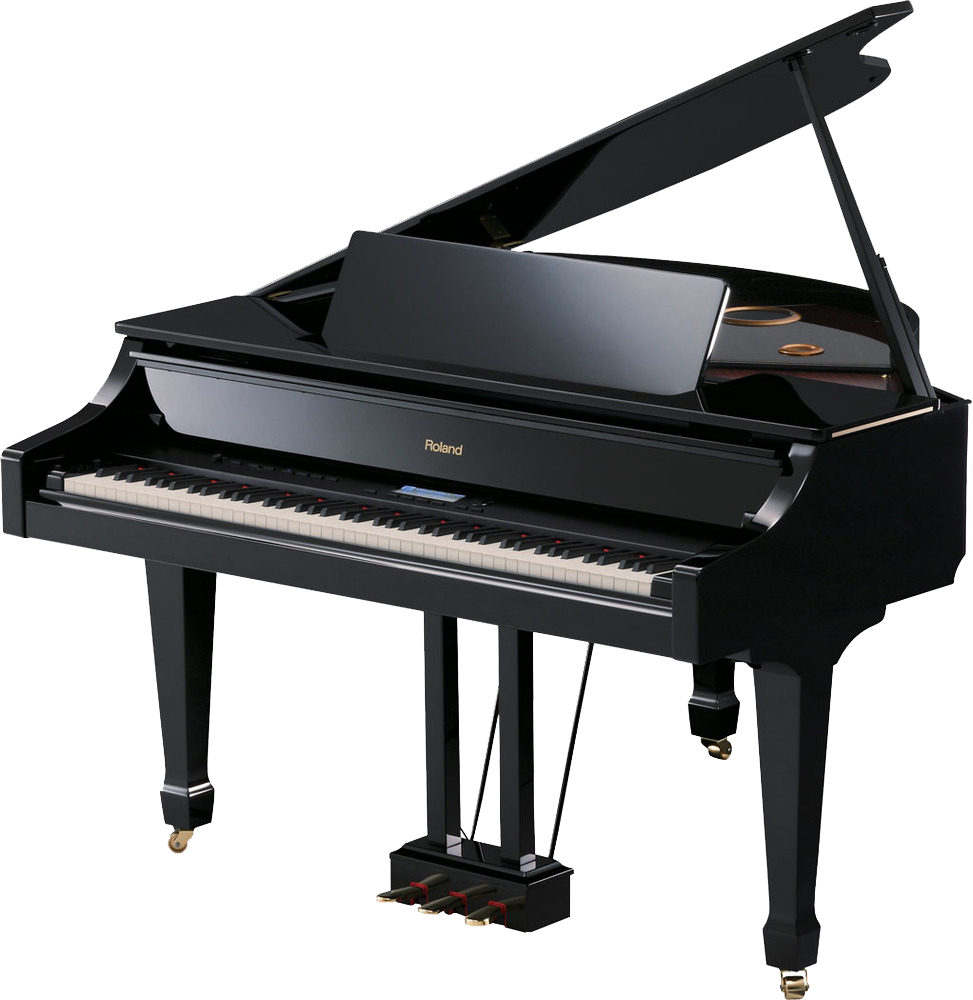
piano
the piano was my first real instrument. my family put me into lessons when i was like 3 or 4 (i lowkey dont remember 😭) and it was pretty alright! i like the piano but it started to feel like a chore instead of an instrument i actively enjoyed and wanted to pursue, and i stopped taking lessons for it in 2024. i still play the piano, but not as often as i once did, and i'm not quite as good as i was before. i used to play piano in SIDEQUEST OTTAWA (until i quit 💀) and now i mostly do it for fun. i might pick it up again and do my rcm exams tho bc it'll probably be useful!!!!
tl;dr im glad i learned piano and its a pretty decent instrument
INSTRUMENTS I'VE PLAYED
PIANO
TIME PLAYED: 12 years
PLAYED FOR: ND Vocals, SIDEQUEST OTTAWA
BARITONE SAX
TIME PLAYED: ~1.5 years
PLAYED FOR: LBP Concert Band, CHS Intermediate Jazz, CHS Coffee House, Chamber 2027*
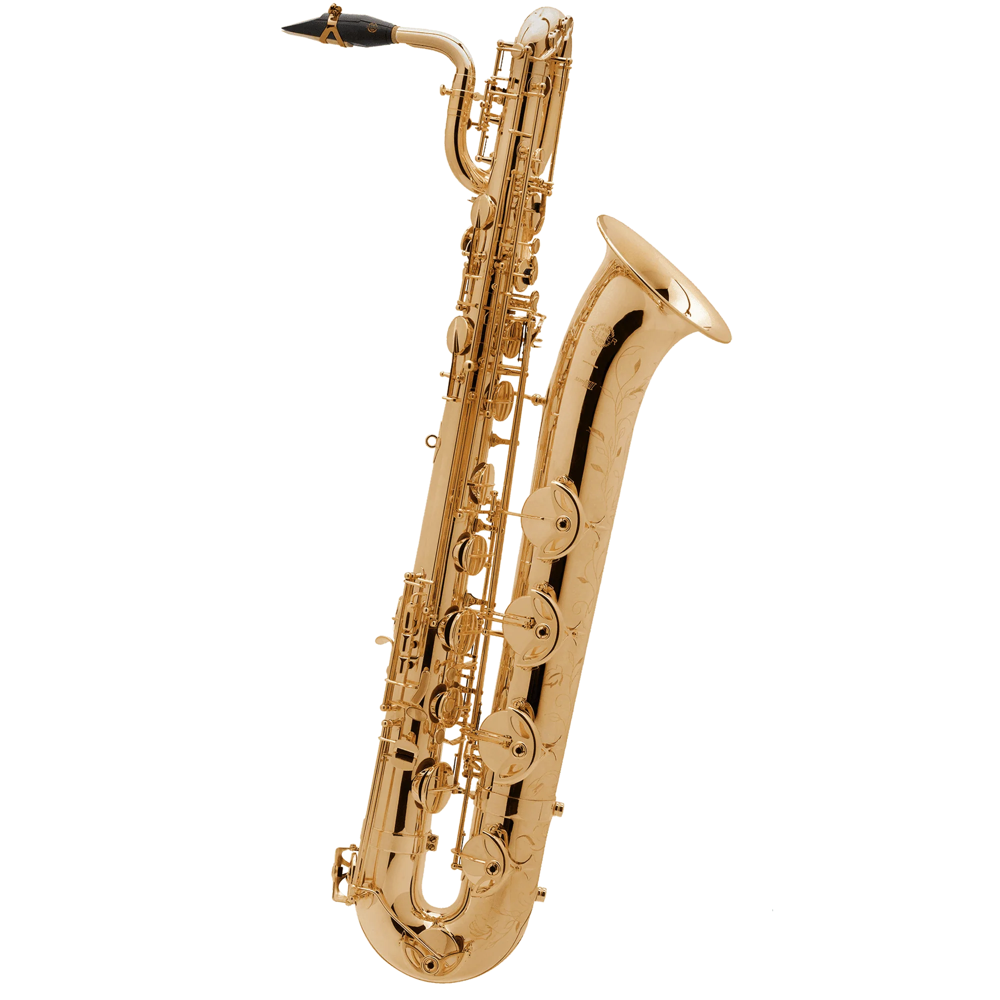
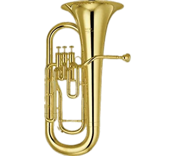
EUPHONIUM
TIME PLAYED: ~1.5 years actively
(~3 years total)
PLAYED FOR: ND Band (2023-2025), Band Camp, L&L*
CLARINET
TIME PLAYED: ~1 year actively
(1 year and 4 months total)
PLAYED FOR: CHS Intermediate Band, L&L, Chamber 2026
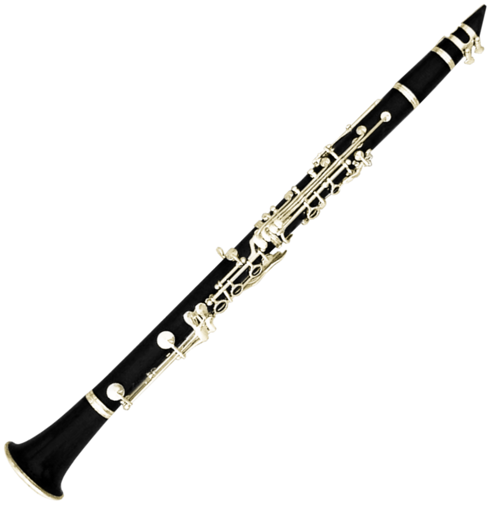
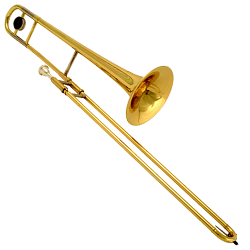
TROMBONE
TIME PLAYED: ~9 months actively
(3.5 years total)
PLAYED FOR: ND Band (2022-2023), L&L*
OTHER INSTRUMENTS
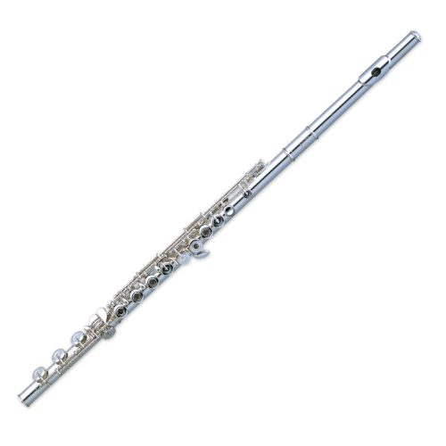
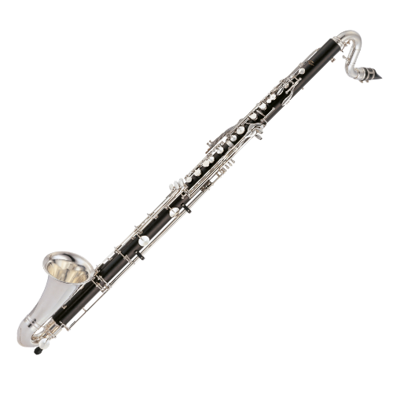
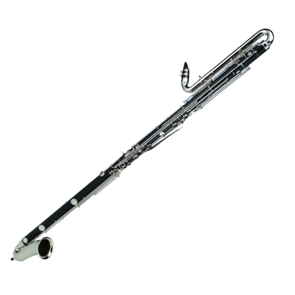
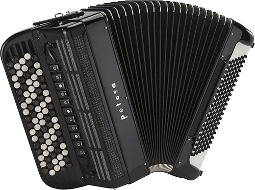
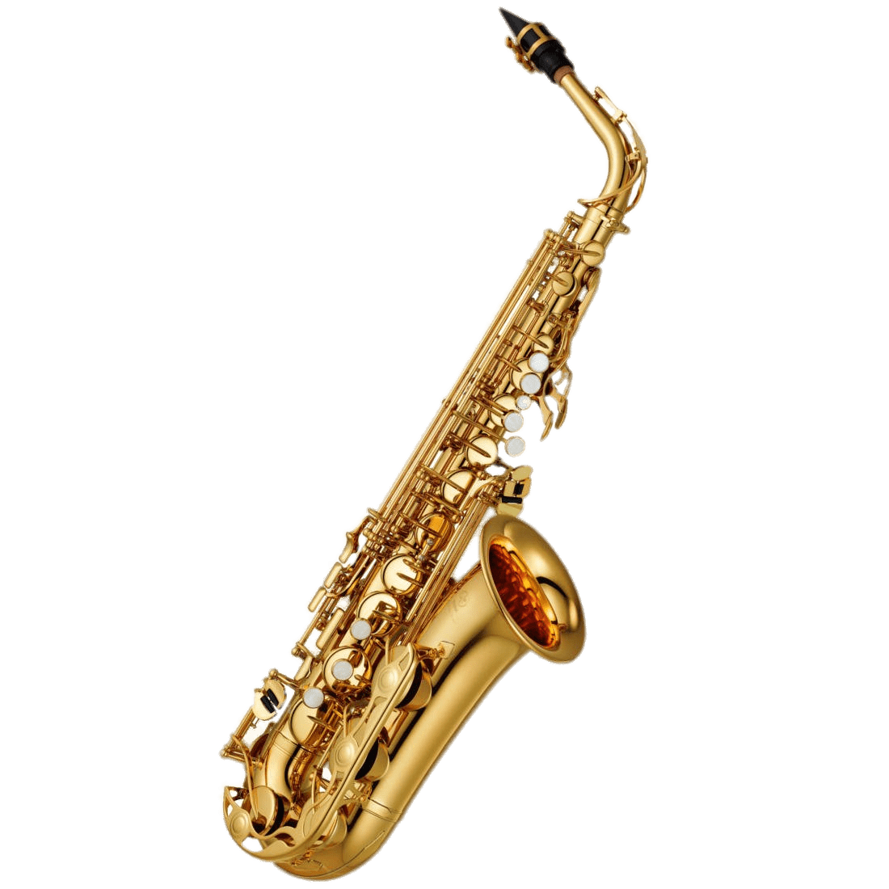
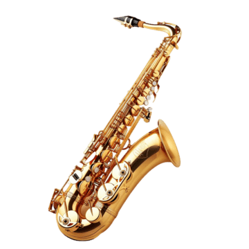
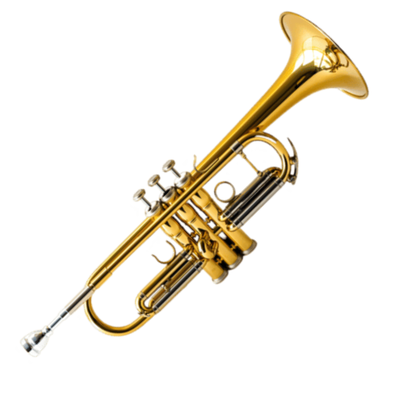
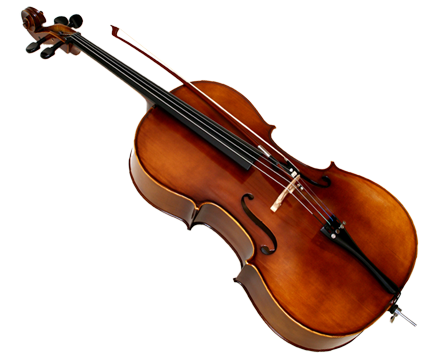
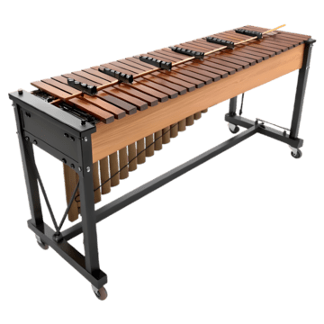
and many more!